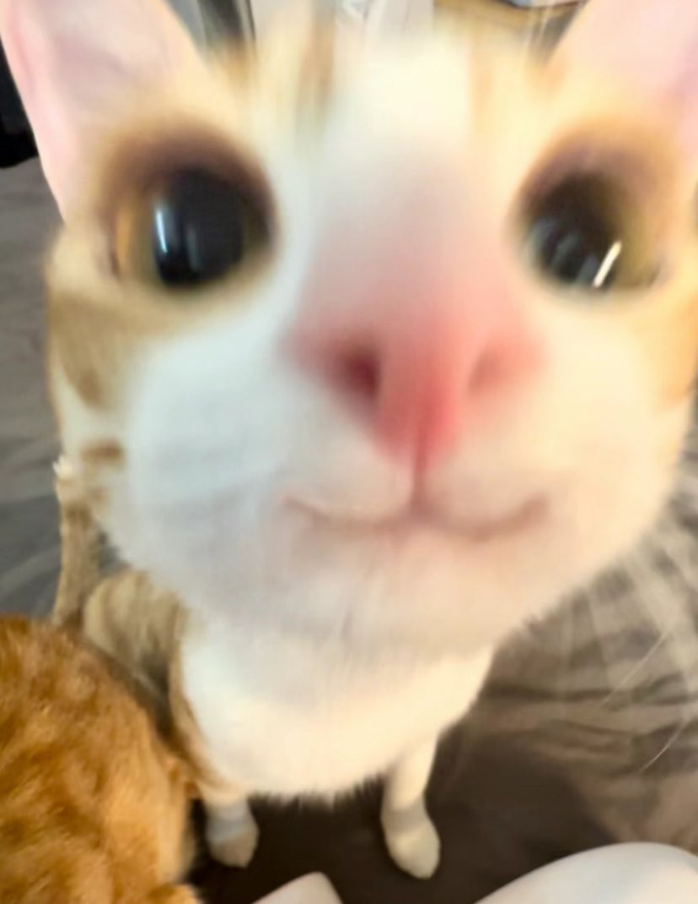
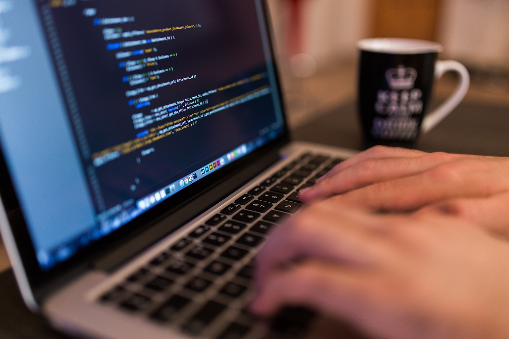
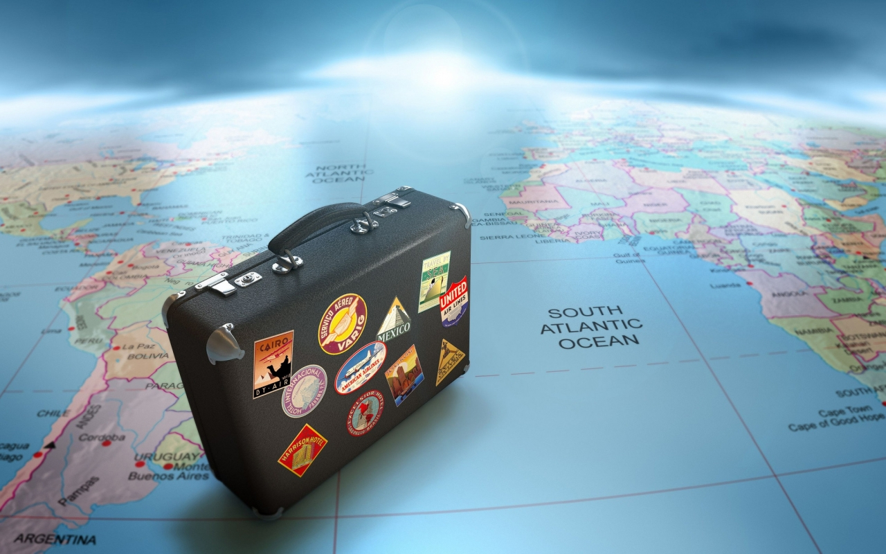

Štěpán Uruba
Student | Vývojář | Nadšenec do technologií
O mně

Jmenuji se Štěpán Uruba a jsem studentem informatiky se zájmem o webové technologie a vývoj softwaru. Rád se učím novým věcem a neustále zdokonaluji své dovednosti. Mým cílem je stát se úspěšným vývojářem a vytvářet inovativní řešení, která budou mít pozitivní dopad na životy lidí.
Vzdělání
VŠB - Technická univerzita Ostrava
2023 - současnost
Bakalářský obor Informatika
Střední škola průmyslová, Krnov
2019 - 2023
Obor Informační technologie
Zájmy

Programování
Ve volném čase rád pracuji na osobních projektech a zdokonaluji své programovací dovednosti.
Hraní her
Rád se odreaguji při hraní videoher a poznávám nové herní světy.

Cestování
Baví mě poznávat nová místa, kultury a lidi. Cestování mi přináší inspiraci a nové zážitky.
Kontakt
Email: stepanuruba03@gmail.com
Telefon: +420 702 285 890